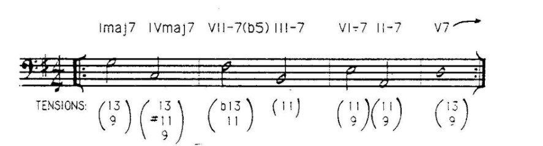

Armonía Diatónica
Cualquier acorde diatónico puede progresar hacia cualquier otro acorde diatónico. La clave está en la relación entre las notas fundamentales de los acordes, conocida como movimiento de la raíz. Existen tres categorías principales de este movimiento:
Movimientos Descendentes en Quintas:
Este es el movimiento de raíz diatónica más fuerte, también conocido como el ciclo de quintas.

Las tensiones disponibles están determinadas por la función del acorde en la tonalidad, las tensiones que son diatónicas a la tonalidad y las tensiones que son una novena mayor por encima de una nota del acorde.
